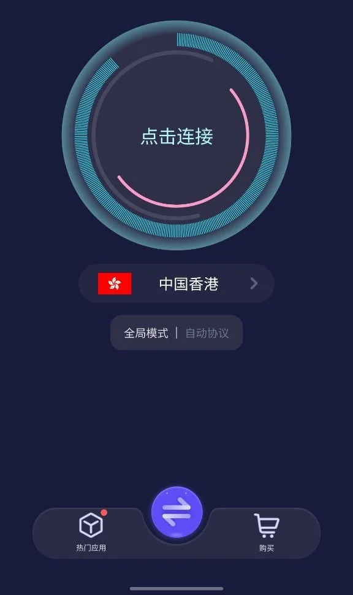
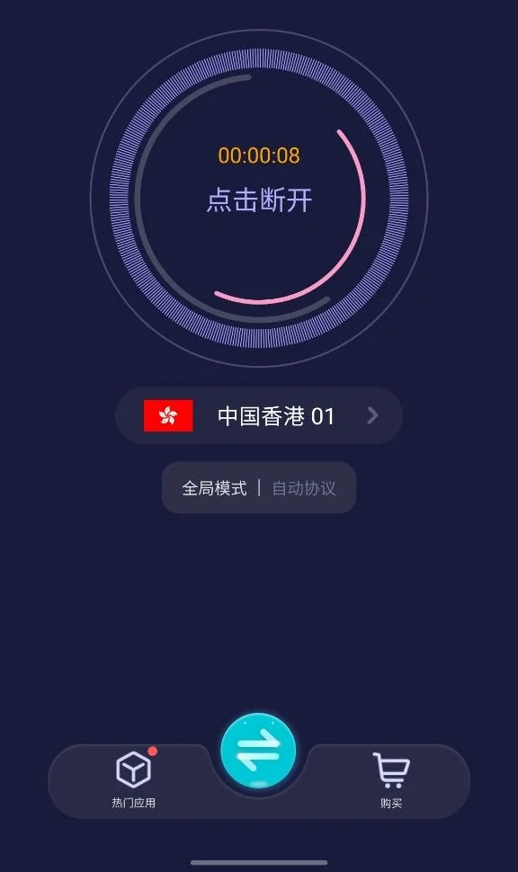

Android 下载
优途加速器 Android 版怎么下载？
还没安装时，先确认 APK 来源和安装权限；客户端已经能打开但连不上时，问题就转到系统 VPN、网络或后台限制。
Android 版获取与 APK 安装
先打开 优途加速器官网，从官网的客户端下载区域选择Android。官网是获取入口，不等于本页提供了安装包直链。若官网没有显示该平台的下载项，可查看 官方帮助 或通过客户端的官方服务核实；不要用搜索广告或陌生网盘中的安装包替代。
选择官网提供的 Android 渠道，核对安装来源后再授权安装；如果安装受阻，先确认系统提示内容。
下载Android客户端前，请核对官网展示的系统要求、应用或文件名称。安装成功后，按下方步骤完成首次连接。若已经能打开客户端却无法联网，应优先检查连接设置，而不是重复下载安装。
Android 下载与安装流程
- 从优途官网进入当前 Android 下载入口，核对来源。不要仅凭“最新版”“破解版”之类的文件名判断安全性。
- 下载完成后点击安装包；若系统提示“允许此来源安装应用”，确认文件来源可靠后，只授权这次使用的下载器或浏览器。
- 安装完成，打开优途并登录。首次点击连接时，系统可能要求添加 VPN 配置或允许连接请求。
- 确认是正在使用的优途客户端后点击“允许”或“确定”；随后选择地区与节点并连接。
用真实界面确认连接成功

连接成功后通常可看到计时器开始计时、按钮显示“点击断开”；Android 状态栏也可能出现 VPN 钥匙图标。这些仅说明隧道可能已建立，不保证每个应用都能正常联网。再打开网页实际验证。

安装完成却不能连接？
- 没有弹出 VPN 授权：返回客户端重新点击连接，按系统提示授权。
- 点击连接后一直转圈：先切换 Wi‑Fi 与移动网络，或换同地区其他节点测试。
- 显示连接但应用不通：检查智能/全局加速配置；先看Android 故障排查。
- 系统阻止安装：确认系统版本、文件是否损坏和是否来自正确下载渠道，不建议安装来源不明的替代版本。